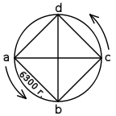

Беседа 254 от 3877 · Беинса Дуно
Двамата свидетели
А и във вашия закон е писано, че на двама человека свидетелството е истинно. (Ев. Йоан 8:17)
Всяко външно свидетелство е проявление на един вътрешен разумен подтик на душата. Защо именно на двама души свидетелството е вярно, а не на единия, и кои са тия двамата? Ако в съвременните съдилища двама съдещи се повикат двама, трима или десет души свидетели, които обичат да лъжат, или които не обичат да говорят истината, съдиите няма да вземат под внимание тяхното свидетелство. Мисля, правниците ще ме подкрепят в това твърдение. Имайте предвид, че говоря принципиално; не засягам никой човек: за мен човешката личност е нещо относително в своята проява. Някои може да помислят, че в беседите си за тях говоря: ни най-малко. Питам ви: Кое е реалното в света, цветът или плодът, листът или клончето, плодът или семката, това са все различни положения, които в математиката се наричат вариации, пермутации и комбинации. Разбирате какво значи вариации в математиката. Може някой път да се позанимаете с тях. Вариация значи нареждане, пермутация – разместване, а комбинация – съчетание. Но ако вие сте една вариация или нареждане в живота, по какво ще се отличавате? Във вашия свят влизат известни величини, които образуват известни съединения, и вие сте една група или едно съединение от тия величини. Величините – това са елементите на проявения ваш живот. Математиците казват, че вариациите са съединения, в които не влизат всички елементи и имат класове. После те казват, че пермутациите са размествания, в които влизат всички елементи, следователно нямат класове. Комбинациите пък са съединения, в които не влизат всички елементи, имат класове и клас от клас се отличава поне с един нов елемент. Към коя категория мога да ви класирам? Може вашият живот да върви само по нареждане, може да върви само по разместване и може да върви по едно съчетание на нещата, на величините. В тия математически определения се крият дълбоки истини, които сега нямам време да обяснявам, защото те са сухи кости и трябва много години да работя над тях, за да им дам живот. Такъв е законът на природата. Има семки, които израстват в 6 месеца, като например тиквата, и дават плод, а други семки, дърветата, които цъфват в 100 години веднъж. Не можем да изменим реда на нещата, който Бог е положил в природата, защото ако го изменим, съдбата на нашия живот се изменя и се ражда карма. Кармата не е нищо друго, освен отклонение от правия път на човешкото развитие, а изкупването на кармата е влизане наново в правия път на човешката еволюция. Следователно би било полезно за онзи, който обича математиката, да се позанимае с тия вариации, пермутации и комбинации. Трябва не само да мислите, че много знаете, но и да опитате знанията си; не само да ги определяте, но да боравите с тия величини и елементи. Да кажем, има нареждане от комитета да се даде на човек по един килограм захар; то е една вариация. Може да чакаш дълго време, а може и да се върнеш със счупено ребро, следователно ще кажеш, че вариацията е излязла несполучлива. Колкото по-скоро вземеш захарта, без да изгубиш време, толкова вариацията ще излезе по-сполучлива. Разбира се, тази вариация няма нищо общо с онази в математиката; тя е само едно отражение на онзи велик духовен закон, който работи в нашата душа.
Ще се върна на предмета. Кои са тези двама, които свидетелстват? Когато българинът иска да съгради някоя колиба, забива първо два кола – те са двамата свидетели – и Господ му казва: „Сега можеш да съградиш колибата“. Отгоре на двата кола той поставя един триъгълник и започва градежа. Когато вие искате да насновете платно, пак трябва да имате двама души, две жени, една в началото, друга в края, да навият платното. Едната жена ще увие наснованото около кръста, а другата ще почне да го навива на кросното и това трае 3–4 часа, докато образуват тази пермутация, туй разместване на нещата. Ще ви се види много смешно, че тия две жени нямат съгласие: едната тегли назад, а другата напред, като рака и щуката. Само тъй може да върви работата. Някой път, да кажем, мъжът е опнал платното, а жената увива, и казват: „Защо тегли мъжът, та не слуша жената“. Тегли, защото инак няма да се наснове платното. В този момент той не трябва да слуша жената, докато се наснове то. Някой път жената тегли, а мъжът насновава – зависи кой навива кросното. Аз ви нахвърлям една мисъл наглед проста, но инак дълбока.
Двамата свидетели пък в природата са светлината и топлината. Тяхното свидетелство е всякога вярно, защото там, дето те проникват, има живот и растене, а там, дето не дадат своето свидетелство, няма никакво движение, никакъв извор, никаква растителност, никакъв живот. Това е в природата. А в човека тия двама свидетели са нашият ум и нашето сърце. Там, дето нашият ум и нашето сърце говорят заедно, тяхното свидетелство е вярно, както и във вашия закон е писано, че свидетелството на двама души е вярно. Христос навежда тази мисъл и казва: „Аз съм, Който свидетелствам за Себе Си, и Отец е, Който свидетелства за Мене“. В духовния свят двамата, които свидетелстват, са Отец и Син, и тяхното свидетелство е вярно. В ангелския свят двамата, които свидетелстват, са духът и душата. В човешкия свят са умът и сърцето. В природата са светлината и топлината. Имате една лестница на възлизане. Следователно, когато ние искаме да изменим нашия живот, трябва да разберем нещата по-обстойно. Ако се движим отгоре надолу, ние трябва да имаме предвид топлината и светлината, понеже те са отражение на Божествения свят; следователно нашият ум трябва да бъде всякога в съгласие със светлината, а сърцето с топлината. Там, дето няма светлина, умът не мисли, а там, дето няма топлина, сърцето не бие. Това не са само положения, твърдения, но велик закон. И когато ни запитат коя е мярката или кое е доказателството, с което ние можем да докажем известни истини в природата, ще употребим светлината и топлината; ако доказваме истини в човешкия живот, ще употребим ума и сърцето; ако доказваме истини в духовния свят, ще си послужим с духа и душата; ако доказваме истини в Божествения свят, ще се отнесем към Отца и към Сина. Не си бъркайте умовете с онези философско-богословски заключения, които казват, че Синът е проявление на Отца. То е, според моето схващане, едно криво определение на съвременния наш живот, защото ако Синът е проявление, то е една сянка. Да се прояви нещо, то е външната страна, а Синът е нещо повече от проявление. Сърцето не може да бъде проявление на ума, нито пък умът – проявление на сърцето. Те могат да си съдействат в проявленията, но това са вариации, пермутации и комбинации – нареждания, размествания и съчетания. Мисълта още не ви е ясна: сега се снове платното и не виждате нищо изтъкано. Христос се обръща и казва, че и във вашия закон свидетелството на двама души е вярно. Ние трябва най-първо да отстраним всяко съмнение от нашия ум. Съмнението в истинския живот не носи никакво добро. И в съвременния живот има хиляди причини да се яви съмнение у нас. Как може да очакваме от другите хора това, което те не могат да проявят в даден момент? Може ли вие да очаквате от ябълката зимно време плодове? Ще ѝ се разсърдите ли, че тя не е била достатъчно милостива и учтива към вас? Няма защо да ѝ се сърдите, защото тя ще ви каже: „Не навреме сте ми дошли на гости“. Някои от съвременните хора живеят в пролетта, други в лятото, трети в есента, а четвърти в зимата. Някои казват, че всички хора са еднакви. Не са всички еднакви. Някои образуват група от вариации, други от пермутации, а трети от комбинации. Същото се казва и във вашия външен закон, който е подобие на вътрешния, понеже долното, земното, е подобие на небесното. Ако вашето сърце и вашият ум говорят за един предмет едно и също нещо, приемете тази истина без никаква резерва, без колебание: всяко колебание ще бъде в ущърб на вашия прогрес. На съвременното общество именно това му липсва – то няма достатъчно вяра в себе си, вяра положителна, вяра без съмнение. Едно време, когато Господ създал света, тогава вярата и знанието, които били две богини и сестри горе в Божествения свят, решили да слязат долу, да помогнат на човеците. На небето те се познавали и се обичали, но като слезли на земята, едната влязла в ума и там се облякла според закона на ума, а другата влязла в сърцето и се облякла според закона на сърцето. Като ги впрегнали хората на работа, те мили паници, кълцали лук, готвели месо, и лицата им станали толкова грозни, че сестрите не могли да се познаят. Казва някой: „Аз имам вяра“. Да, вяра, която готви лук, която пържи месо, която мие паници, която се бори със съмнение. Тъй и тия две сестри, вярата и знанието, не се познали и почнали да се карат и да се препират: коя е първа, вярата или знанието? И така целият свят се разделил: едни взели страната на вярата и станали религиозни, а други хора взели страната на знанието и станали материалисти. И започнали бомбардиране: „Аз съм учен, ти си невежа“; – „Ти имаш вяра, но си първокласен глупак“. И сега имаме хиляди томове написани върху материалистичната философия и вярата, но тия две сестри още не са се помирили. Когато Господ видял, че се скарали, пратил Сина си да ги помири. Казват някои: „Как ще се помирят?“ – Чрез самопожертване.
Някои питат: „Кой е мъжът и коя е жената?“ Жената е вярата, а мъжът – знанието. Като се карат, мъжът и жената не се познават. Жената казва: „Аз искам да бъда мъж“. На небето вие сте били две сестри, богини, слезли сте от небето, за да поправите света; едната се превърнала на жена, кълца лук, а другата – на мъж, отворил дюкяни, продава дини, тикви, лук и т.н. Те не само не могли да оправят света, но са го развалили толкова, че и Господ не може да го познае. Трябва право, дълбоко, искрено мислене. Мъжът и жената, като се съединят и дадат свидетелство в живота, тяхното свидетелство ще бъде вярно само ако бъде с Мъдрост и Любов. Любовта е онази велика сила, която може да понесе най-големи страдания без падане на духа. То е вярата. А Мъдростта е онази сила, с която може да се разрешат най-трудните задачи в живота. Всички съвременни мъчнотии са задачи, които ние трябва да разрешим, а не да казваме: „Господи, махни ги, не ни трябват“. Майката казва: „Измъчи се моето дете: толкова задачи му е задал учителят; то отслабна, горкото, не може да си отспи“. Господ не е пратил вашето дете на земята да спи. Той го е пратил да се учи. Без съмнение сънят е потребен за временна почивка. Може да почива 5 минути, 10 минути, 2 часа или 7 часа, но повече от 7 часа почивка не му се позволява.
И във вашия закон е казано, че свидетелството на двама души е вярно. Някой път в съдилището дойдат тия двама свидетели и казват: „Мъжът е крив, жената е права“. Мъжът се обръща и казва: „Протестирам, господин съдия, тия двама свидетели са заинтересовани, махнете ги, аз ще повикам други свидетели“, и докарва други двама свидетели. Тогава жената казва: „Аз протестирам, господин съдия, тия двама свидетели за заинтересовани“. Най-после, съдията се намира в чудо и отлага делото. Затова най-голямото изкуство в правото е да можеш да отлагаш делото, когато не можеш да го спечелиш. И вие сте адвокати, които отлагате делата си, а това значи, че оставяте вашите задачи в живота неразрешени – за по-благоприятно време. „Сега – казвате като съдията – съм малко неразположен.“
Не хвърляйте вината на вашия ум, че бил слаб; не казвайте: „Аз съм слабоумен“. Никога не казвайте, че сърцето ви е покварено. Вие може да цитирате от Писанието, че умът е покварен; това са само философски твърдения на пророците, но вие трябва да разберете дълбокия смисъл на тези думи. Ако сърцето беше покварено, ако то не струваше нищо, Бог никога не би казал: „Сине мой, дай ми сърцето си“. Той не казва: „Дай ми живота си“. Трябва да го дадеш на Бога, за да те научи на великата истина, че твоето сърце е нещо възвишено и благородно, че в него се крият източниците на твоя сегашен и бъдещ живот. Никой не може да живее, когато сърцето му е неспокойно. Дори съвременната медицина препоръчва сърцето да бъде спокойно. На повърхнината му може да има малки вълнения, но долу, в основата, трябва да бъде тихо и спокойно. Може да има течение, но никога това течение да не вълнува сърцето. Когато вашият ум и вашето сърце се обърнат към Бога, Той слуша молитвите ви и решава правилно съдбата ви. Сърцето и умът са две величини, два елемента на тази група, наречена астрално-ментален свят според окултизма, а аз го казвам веро-философен – да изкова нова дума – свят веро-философен. Следователно свидетелството на тия двама, този закон веро-философен, се взема за истина в Божествения свят, както е вярно свидетелството на топлината и светлината във физическия свят. Светлината е качество на Мъдростта, а топлината е качество на Любовта, неотделна от последната. Обаче не тази топлина, която усещате. Вие често усещате неприятните вибрации на топлината. Когато имате опитността на един мистик, да паднете в екстаз, само при такова състояние вие можете да опитате тази вътрешна Божествена топлина – качеството на Любовта. Такава топлина може да разтопи и пречисти всичко. Трябва да повишите вашата топлина не според целзиевия термометър, но като изучите алхимията и проучите вибрациите на тази топлина. Тя е толкова интензивна, че всички нечистотии, които смущават живота ви, веднага ще се пречистят. Това може да постигнете, ако изпъдите съмнението от вашето сърце и от вашия ум. Или нека употребя друг израз: Извадете съмнението отвън, наемете му стая, плащайте му наем, но не го дръжте в дома си.
Като полага този велик закон, Христос казва: „Аз съм, Който свидетелствам за Себе Си, и Отец за Мен“. Кой е важният въпрос, за който сме се събрали днес? Аз не разрешавам въпроса, дали след една седмица ще ви дадат по един килограм захар; аз не разрешавам въпроса, който комитетът може да разреши; аз не разрешавам въпроса, какъв мир може да се сключи. Може да се повдигнат много подобни въпроси, които не са съществени за нас. Важното е, за какво е дошъл човек на земята: имате ли душа или нямате; имате ли ум или нямате, имате ли сърце и в съгласие ли са вашите сърца и вашите умове и т.н. Често пъти сърцето ви се смущава и търсите приятел да ви премахне смущението, но представете си, че и той се намира в същото положение. Събират се група хора, образуват общество и казват: „Ние сме песимисти“, и почват философски да го доказват. Те гледат особено на света, намират, че не бил от най-добрите, и почват да доказват научно, че този свят е най-лош. Ето аргументите им: лош бил, понеже колели кокошките, воловете, имало земетресения, войни и тям подобни. Ако бил добър, той щял да бъде другояче, казват те. Но аз казвам: Вие, господа песимисти, сте онези мъже и жени, които сега навиват кросното – и двамата теглят назад, но щом насноват платното, жената вземе платното, мъжът совалките и казват: „Свършихме работата“, и няма вече дърпане – противоречия в живота. Тяхната работа става свидетелство, че са работили заедно, в съгласие. Често ние казваме, че мъжът и жената се теглили като рака и щуката, но това са тия мъже, които са в две посоки: от центъра към периферията и обратно. Ако мъжът отива към една посока, жената отива към друга. Кой е прав? И двамата са прави, защото се движат от центъра към периферията. Когато и двамата дойдат в периферията и почнат да се движат, тогава са в Пътя. Когато изучавате астрономията, ще забележите, че земята и слънцето имат две противоположни движения: слънцето се движи по една посока, а земята по друга. И всякога земята пресича пътя на слънцето. Но пътят на земята е по-дълъг от пътя на слънцето. Когато на нашето слънце, за да направи едно обръщение около центъра на своя кръг, са необходими 52,000,000 години, земята трябва да се обърне 25,000,000 пъти около слънцето и плюс това да направи със слънцето заедно един голям кръг. Кой върши по-голяма работа? И двамата вършат добре работата си. Слънцето иждивява по-голяма енергия, а земята – повече време. Във физиката има един закон, че всеки, който иска да спести енергия, трябва да иждивява време; следователно, ако в едно отношение вие искате да спестите енергия на вашия ум, ще иждивите енергията на вашето сърце; и наопаки, ако искате да спестите енергията на вашето сърце, ще иждивите енергията на вашия ум. Защото времето се познава по посоката на движението. Аз не разисквам философски какво е времето в самата си същина, но казвам: Времето е един фактор, който определя самото движение, насоката на вашия живот. А енергията е подтик на това движение отвътре. Ако иждивим енергията на ума, пестим енергията на сърцето, и наопаки, ако иждивим енергията на сърцето, пестим енергията на ума. Във всеки даден момент вие ще се спрете върху двамата свидетели. И в съдилищата това е вярно – двама свидетели не могат да говорят едновременно: когато единият говори, другият трябва да мълчи; когато единият хаби енергия, другият трябва да седи тихо и спокойно. Ако почнат да говорят изведнъж двамата, съдията ще им каже: „Чакайте!“ Единият, значи, ще определя времето, другият енергията. Следователно, когато единият свидетел вътре във вас говори, вие, ако сте съдия, ще кажете на другия да мълчи, за да дадете време на вашия ум да се произнесе. Не го смущавайте, нека се изкаже докрай, и след туй ще дойде вашето сърце да каже и то своето свидетелство. Също и при възпитанието, трябва да турим ума и сърцето в най-нормални отношения и да ги оставим, да не ги спъваме с неща, които не са реални. Най-първо на вас говоря, но под думата „на вас“ подразбирам тъй грамадно мнозинство хора, защото всеки човек е колективно същество от милиони и милиони души заедно. Всички тия души са разумни и слушат тази беседа. Разбирате ли? Даже някой път забелязвам, че вашите очи по-добре ме разбират, отколкото вашите мозъци. Най-схватливи в света са очите. Като погледнеш един човек, по очите ще забележиш дали те разбира или не. Когато не те разбира, очите му са мътни. – „Ахмед бурада, акъл дишарда“, както казват турците, т.е. „Ахмед е тука, но умът му е отвънка“. Когато човек ви разбира, вие виждате неговия проницателен поглед фиксиран и долавяте, че той разбира всичко и че има връзка с отношенията на нещата. Всеки от вас знае туй. Мнозина казват: „Аз го усещам“. Хубаво, но трябва и да го долавяш с ума си. Ако ти си слушал само свидетелството на твоето сърце, а не и свидетелството на ума, ти си на крив път на развитие. Ако светлината в тебе работи повече, отколкото топлината, пак си на крив път. Някой път у вас чувствата са интензивни. Като дойдат в извънмерна радост, децата почват да скачат, след туй настане в тях преходно състояние и те почват да плачат; тази радост не е естествена. При възпитанието трябва да се създаде едновременно работа и за сърцето, и за ума. И аз ви моля, когато някой човек говори, никога да не го спирате със своите мисли. Ако не искате да го слушате, отдалечете се. Дъщерята каже на майка си: „Аз не искам да те слушам“, или майката каже на дъщерята: „Аз не искам да те слушам“. Този, който не иска да слуша, повтарям, нека се отдалечи. Много пъти се случва и друго: детето се въодушевило от това, което учителят е разправил при урока, дохожда вкъщи и почва да го разправя на майката, а тя изведнъж рече: „Махни се – не искам да слушам твоите глупости“. В този случай майката прави голямо престъпление. Тя трябва да изслуша своето дете, да чуе какво му е казал учителят: то дава своето свидетелство. След като го прекъсне така грубо 10–20 пъти, детето сигурно ще хване кривия път в живота – това е по отношение на ума. Някой път пък сърцето на дъщерята се е въодушевило, но майка ѝ, като се оженила, станала философка, ще я спре с думите: „Не се води по глупостите на твоето сърце, не го слушай! – Парички, парички! Желанията на сърцето са илюзии на младежта – трябва месце за ядене“. И днес спрат крехката душа на дъщерята – това не е важно, утре онова не е важно – тя стане като майка си и почне да казва: „Това е глупаво, реално е еди-какво“. Реално беше това, което чувстваше това момиченце, дъщерята, в своето сърце, по-реално от него няма. Как искате да опитате нещо: с езика си, или със сърцето си? Ще приведа пак онзи пример, който съм привеждал и друг път. Един турчин кълцал кафе в един голям каменен хаван с голям дървен чук и като чукал, казвал: „Ха!“ Минавал край дюкяна му един човек и му казал: „Аз съм без работа, предлагам услугите си, искам да ти помогна в тази работа. Ти ще чукаш с чука, а аз ще казвам „Ха!“ – Почнали работата. Турчинът вдигал и слагал чука, а помагачът викал: „Ха!“ Счукали кафето. Турчинът почнал да прави кафета и като вземал пари, турял ги в касата и нищо не давал на съдружника си. Последният се докачил, завел дело за неизпълнение договора на съдружието. Съдията попитал как стои работата и като му разправили, поръчал да направят една тенекия и казал на кафеджията: „Като взимаш пари, ще ги пущаш в тенекията и тенекията ще каже „Тин!“ Това ще бъде заплатата на съдружника ти, който казваше „Ха!“. Вие, които слушате вкуса на вашия език, то е, както се казва на турски: „нефес-орта“. Тъй че и във вашия закон е писано, че свидетелството на тези двама души е вярно.
За да можете да разберете философията на живота, трябва да имате чисто сърце и чист ум. Най-първо трябва вашите ум и сърце да бъдат в такова положение, щото умът да схваща нещата, когато трябва, и сърцето да ги чувства, когато трябва. Но ще каже някой философ: „Вие не може да чувствате и мислите като ангелите“. Когато дойдете до тяхното положение, ще чувствате като тях. В живота има разни стадии на развитие; всяка минута, всяка секунда носят своите качества и сили. Не се стремете всички да бъдете еднообразни, еднакви. Когато Бог първоначално е създал света, всички души, които излезли от центъра на битието и тръгнали по разни посоки, като слънчевите лъчи, всяка от тях е понесла по нещо от този Божествен център – разни дарби, разни чувства и прочие: Няма две души еднакви в света, и не може да бъдат еднакви, макар разликата между едната и другата да бъде малка.
Когато изучаваме астрологията, ще видите, че се намирате на известен градус от една или друга четвъртина на кръга, 
Какви са нашите отношения към Бога? Някои казват: „Да ни помогне Господ да се наредим, да наредим децата си, да оженим дъщеря си, после да имаме дечица, да имаме пълни хамбари, волове, туй да ядем, онуй да пием и т.н.“ Всеки ден нареждаме и най-после умрем. Попът дойде и започне: „Благословен Господ Бог наш“, и свърши: „Успокой, Господи“. Този, който иска да го нареди Господ, трябва да мине през всички тия вариации, пермутации и комбинации, а не да остане само в нареждането. България сега издава само предписания и нареждания. Това не е нищо друго, освен претоварване на камилата: турят провизии и стоки, докато ѝ се счупи гърбът. Онова, което Бог свидетелства вътре в нас, то е Духът, който говори, и ние, като чада Божии, трябва да умеем да се вслушваме в Неговия глас. Преди няколко деня дойде при мене един младеж, запасен офицер, и ми разправи, че се разболял от неизлечима болест. Той бил на умиране, но попада му на ръката една книжка за лекуване чрез глад, струва ми се, от някой си доктор Мюлер. Решава и той почва да гладува и това продължава 22 дена. Разправи ми опитността, която е получил от първия, втория, третия ден и резултатът бил, че неизлечимата болест изчезнала. Тогава отишъл в Пловдив при лекаря, който по-рано му казал, че болестта му е неизлечима, и казал: „Изследвай ме“. Докторът го изследвал и му казал: „Здрав си“. Този човек приложил глада със своя ум и сърце. След туй се прояснява умът му и от материалист той става духовен. Той разбира, че в света има и друго нещо, освен онова, което хората познават. От това се разбира, че той е прогледнал, станал е до известна степен ясновидец. Отива той при един вярващ и казва, че Духът го навел на тази идея, но той си казал: „Умът му е малко слаб“. За тях е вярващ само онзи, който вярва в кълцаното месо, в пиенето, в парите – неговият ум е на мястото, а да вярваш в духове, считат те умопобъркан. От тяхното гледище едни са умни, други глупави, обаче от моето гледище всички са добри. Вестниците пишат: „Този е изедник, онзи е разбойник, да се накажат тия изедници, разбойници, кърлежите народни и т.н.“ Те гледат на нещата едностранчиво, а трябва да имат вяра само в положителните неща. Видимите неща трябва да се изхвърлят навън, те не са в Божествения свят. Ние трябва да проникнем дълбоко в нашите души и сърца; да кажем в себе си, че сме синове Божии, че сме излязли от Божествения център и затова ще вършим волята Божия. Някои казват: „Искам да бъда добър“. Крив път си хванал: никога няма да бъдеш добър; ти трябва да вършиш волята Божия. Ти може да си добър, ама като не вършиш волята Божия, ти си лош. Съвременните хора трябва да решат да вършат волята Божия в пълния смисъл на думата. Но не тъй, както я разбират, защото това, което те вършат, не е волята Божия, а служене на себе си. Да изпълняваме волята Божия значи да почувстваме единство с Бога. Тогава ни обгръща радост и гледаме на всички хора тихо и спокойно, защото знаем причината и последствията на техните недостатъци. А ние, когато слугуваме на себе си, не се разбираме, и от това произтича злото в света. Ако вашето сърце спре за половин час, то ще почне да мирише, тъй и умът, ако спре да работи, ще се вмирише. Казват за някого, че дишането му спряло. Лъжат: Когато дишането и биенето на сърцето на физическото поле спре, душата започва да работи. Това е опитност, която са имали всички, които се занимават с духовните науки. Някой пита: „Какво ще стане с мене, когато спре сърцето ми да бие?“ – Ще се пробуди твоята душа. „Какво ще стане, когато спре работата на моя ум?“ – Ще се пробуди Божествения дух. Не ви препоръчвам и не ми е намерението да ви накарам да постите 22 дена, както онзи момък, за който ви говорих. С това не се постига нищо, ако нямате вяра; но ще кажа, че според мене този момък се е освободил от едно съмнение и е пробудил Божественото в себе си. Ако искате да изпълните всички ваши задължения, да премахнете всички нещастия, постете 5–10–15–20 дена и тогава ще научите и причините на всичко. Но заедно, и сърцето, и умът да ви го подскажат. Тогава постете, и резултатът ще бъде отличен. Но ако сърцето каже: „Пости“, а умът: „Недей“, не започвайте. Някой ще каже: „И без пост може“. Не може. В известен момент на живота, когато трябва да усилим нашата воля, да я съединим с волята Божия, да видим свидетелството на тия двама души, трябва да постим.
Сега, за влиянието на планетите върху хората. Онези, които се намират под влиянието на земята, знаете ли как ще се отрази то върху тях? Ще ги направи алчни за имане. Когато констатирате известна алчност у човека, то показва, че земята има влияние на него. Когато у вас се породи желание и движение да довършите или да създадете нещо, върху вас има влияние Меркурий. Когато вашето сърце почне да обича и да люби, вие сте под влиянието на планетата Венера. Когато Марс влияе върху вас, у вас ще се породи желание да се борите, да се покажете, че сте силен и мощен. Когато планетата Юпитер има влияние върху вас, ще почнете да се въздържате, ще станете малко по-умерен, мълчалив и ще се стремите към свобода и братство. Когато Сатурн има влияние, ще се усили вашето чувстване, вашето обоняние. Когато Уран има влияние, ще се усили вашето сърце. А пък когато Нептун започне своето влияние, тогава у вас ще се засили виждането, ще станете ясновидец. Всички тия планети от слънчевата система със своите влияния предизвикват у хората разни прояви. Когато едновременно действат всички планети, които са живи и разумни, тогава сме в хармония. Когато кажете, че не обичате света, подразбирам, че сте под влиянието на земята. Вие искате да имате всички богатства на този свят, но затова пък ще се отдалечите от Бога. Не сте дошли на земята да бъдете богати, а да придобиете знания, да разбирате тия двама свидетели, за които ви говоря. Трябва да проучите вашето сърце и ум. Те са двама професори, които ви учат. Сърцето е отличен професор; то е онази богиня, за която ви говорих; то е вярата, то е Любовта. А в свръзка със знанието то образува религията на земята. Разбрахте ли този професор, който е вътре във вас? Казвате: „Моят ум е глупав“. Това значи, че вашият професор, който ви е учил, е глупав човек и не разбирал професията си. Аз ви казвам, че вие не разбирате или не слушате ума и сърцето си. Някой ще каже за другиго, че не вярва в Бога. Аз пък ще кажа, че той не вярва в сърцето си. „Ама той не е умен човек“; аз казвам: Той не вярва в ума си. Ония, които се отчайват от този свят, които искат да се самоубият, не обичат светлината. Никой не иска да се самоубие на високо място, на планина, а на някое тъмно място, в някоя изба. Ония егоистични сили, които искат да ви попречат на развитието, произвеждат във вашия ум затъмнения, за да може да се извърши престъпление и да кажат, че умът е извършил престъплението. Богинята, която е слязла от небето, не прави престъпления. Също и сърцето, вашата вяра, тази богиня, която е слязла отгоре, не върши престъпления. Следователно, казвам на всички ви: Вярвайте в сърцето си, вярвайте в ума си, тогава ще дойдете във второто положение – ще повярвате в душата и духа си, след това в Бога и в Неговия Син. Само така вие ще придобиете истинска философия за разбиране великия закон на природата. Вие питате какво е вашето предназначение. Софиянците трябва по 4–5 пъти да възлизат на Витоша лятно време, да посетят всички водопади, да възлязат и на Мусала, и на Белмекен. „Обуща трябват, а те са скъпи“. Екскурзии, екскурзии нагоре, по планината! А тези екскурзии са стимул, който ще развие ума и сърцето на човека. Трябва непременно да се изкачвате на високи места. Като казвам „изкачване на високо по планините“, употребявам един символ. Който иска да развие своя ум, трябва непременно да се изкачва на високо място. Който иска да развие своето сърце, трябва да слиза към ниски места. И едното, и другото е геройство. Колко пътешественици са искали да се изкачат на Хималаите, но не са успели, защото са недосегаеми. Така и в човешкото развитие има места, дето човешкият ум не е могъл да се качи. В България някои даже не знаят Мусала, а кой знае колко малко са се изкачили на този връх. Аз смятам, че на 10,000 едва един е достигнал горе, а понеже за мен Мон-Блан е мярката, с която се мери европейския ум, ще кажа, че малцина са достигнали върха на тази планина. Ще ми кажете: „Това са отвлечени работи, които нямат никаква връзка с нашия комитет по прехраната. Знаете ли в какво трудно положение се намираме: масло, сирене и прочие продукти няма“. Комуто трябва масло, нека дойде при мен, аз ще му дам – ще му дам метод да си изважда масло от природата. Вие може да имате масло, колкото искате, ако тия двама свидетели говорят във вас вярно. Елате, ще направим опит. Аз поставям тази Божествена наука на жив опит: с онези от вас, в които тия двама свидетели говорят, ще направим опита. И знаете ли какво ще бъде тогава положението ви? В Индия един велик учител, брамин, имал крава, която била толкова красива, че местният княз искал да му я вземе; направил опит да я купи с пари. „Не искам никакви пари“, отговорил браминът. – „Ама да ти дам толкова пари, колкото тежи кравата.“ – „И целият свят да ми дадеш, не си давам кравата.“ – „Ще я взема насила!“ – „Опитай се!“ – Князът изпратил 10 души стражари да му вземат насила кравата, но браминът махнал с ръка и те се прострели на земята. Князът праща 1,000 души, браминът пак махва с ръка и те също се прострели. Пратил 20,000 души – всички се прострели на земята. Човекът не си давал кравата. Князът се убедил, че този човек е силен, отишъл при него и му станал ученик. Той искал да проучи как браминът добил тази тайна сила. Започнал той да живее като него: Проживял 1,000 години, опитал се да му вземе кравата, но пак не можал. Прекарал и учил други 1,000 години и пак се опитал, но не успял. Прекарал още 1,000 години, всичко 3,000 години, и видял, че станал по-силен от брамина, но сега вече си рекъл: „Защо ми е неговата крава – не ми трябва“. Намерете тази крава, тя е вътре във вас, и като я намерите, вие ще имате и млечице, и масло, и всичко – мед и мляко ще потече, както се казва. Едно време в Палестина текло мляко и мед и двама души носели един грозд, а сега там не тече нито мляко, нито мед. Има причини за това. Дайте място в сърцето и ума си на всичко, каквото считате за добро в света – това е първото правило. „Всичко е добро“, казвайте. То не е тъй, но кажете, че е тъй, и ще стане тъй. Кажете, че е добро, вие ще се обърнете към друга посока. Кажете: „Не искам неговите пари; защо ми е този товар“. Лошо е, когато желаете нещо и не можете да го имате или да го носите. В дадения момент, например, какво ще ви ползва богатството, когато утре може да стане някоя катастрофа? Сега се готвим уж за другия свят, а не вярваме в него. Ако почне някой сега да говори за духове, другите ще кажат, че му е изхвръкнала чивията. В Америка имало един проповедник, който като държал речи, много обичал да преувеличава нещата. Той имал един приятел на име Жан. Извикал го и му рекъл: „Ще ми направиш една услуга, когато чуеш в събранието, че преувеличавам нещо. Ще завъртиш с показалеца ей тъй“. Проповедникът държал един ден проповед за Самсон, който хванал 300 лисици, и почнал да обяснява, че опашките на тези лисици били извънредно дълги – по три метра. „И това е факт, защото го казва еди-кой си автор“, казал той. – Привежда и цитира, неговият приятел махнал с показалеца. „Но – продължили проповедникът – туй ми се вижда невероятно, аз предполагам, че опашките са били дълги два метра“. Почва да цитира друг автор, приятелят му пак махнал с показалеца. „Но и това пак ми се вижда невероятно, обаче те сигурно са били един метър дълги“, и почнал да го доказва пак с цитати; приятелят му отново помахва с показалеца. „Но – казва проповедникът – и това ми се вижда неестествено, сигурно е, че опашките са били дълги колкото на нашите лисици – около 50–60 сантиметра“. Жан пак махнал с показалеца, но проповедникът скокнал и извикал: „Жан, повече от това не съкращавам вече“. Опашките и в самсоново време са били толкова дълги, колкото и в наше време. Какво има тук да се аргументира, че еди-кой си автор казал това или онова? И хората четат разни философи, четат, докато най-после биват принудени да погледнат истината в природата: как са нещата действително в живота – това, което говорят сърцето и умът. Бъдете верни на тези два принципа, и вие ще имате покрепата на невидимия свят, който е около вас и помага на всекиго, който търси истината. Ние не сме сами на земята и няма защо да се грижим за своята прехрана, всичко е приготвено. Едно време, когато Господ изведе евреите из Египет и ги прекара през пустинята, даде им манна да ядат и им заповяда всеки ден да събират само за този ден. Да не събират за два, освен за съботата; обаче евреите, научени в Египет, който представлява и сегашния свят, не послушали, събирали манна за два дена, но тя се разваляла. И ние, съвременните хора, в стремлението си да трупаме за бъдещето, не даваме дори почивка на ума и сърцето си. Затова всичко в нашия живот се разваля. А знаете ли какво значи това? Също както детето иска да ангажира майка си през целия ден. Ние казваме за такова дете, че е непослушно. Има време и за детето, а има време и самата майка да посвети за себе си. Не мислете, че вашето време е изключително за вашите деца, нито тяхното за вас; част от вашето време трябва да бъде посветено и на Бога, и на вашите ближни. Всички хора трябва да посветят известно време на това, да познаят какъв е великият закон. Трябва да се посвети известно време на Бога. Но какво правите вие? Отивате и си гледате търговията или работите. И какво се случва? Изгубите 10 пъти повече време. Ще каже някой: „Посочете къде има статистика в света, да установи какво се е случило на ония търговци, които не са изпълнили закона, и на ония земеделци, които не са постъпили съобразно с него“. Дойде някой път при търговеца беден човек, който проси – това значи, че Господ иска от човека да посвети известно време и Нему; нека му даде нещо, нека му каже блага дума; но често той му казва: „Махни се – имам работа“. Господ тогава пише в своя тефтер; че еди-кой не е посветил даденото време Нему. Търговецът постъпи така 3–4 пъти и виждаш – дошла криза, изгубил 100–200,000 лева. Взема му ги Господ, защото не изпълнил закона. Със земеделеца, който не изпълнява закона, какво става? Сее 2–3 години, но нивата не ражда – защото е отказал да посвети един малък момент на Бога. Свещениците пък ще кажат, че всичкото време човек трябва да посвети на Бога. Много добре, но те не правят това. Мойсей, който е дал закона за почивката, е бил много по-умен – казал е: „Шест дена работи за себе си, за жена си, за децата си, за приятелите си, а седмият ден е на Господа Бога твоего“. Тази почивка е необходима за тебе, за да влезеш вътре в себе си и да прецениш опитността, която си имал през деня на седмицата. Ще кажеш на жена си и на децата си: „Оставете ме свободен, днес да послужа на Господа“. Ама децата се биели, жената била неразположена; оставете ги, не ги прекомерно съжалявайте. Ако жалите вашите близки и приятели в този ден, вие ще излезете вън от Божествената хармония и ще изгубите един велик момент от живота си. Дойдат хора при мене и ми се оплакват, че няма какво да ядат. Аз съм опитал всички методи на ядене, с които хората се хранят. Ял съм по една ябълка, само боб, и пак съм проживял. Според мене само хлебец е най-хубавата храна. Ама това не било хигиенична храна. Месцето, масълцето, маслинките, пастърмата, супица, направена от агнешки дробчета – те са още по-нехигиенични. Казват: „Да се яде така, както препоръчваш, то е калугерска работа“. Заблудили сме се с животински ум и сме станали месоядци: заблудили сме се с инстинкта на свинята и сме станали всеядци – свинята яде всичко, от нищо не се отказва. Веднъж дойде при мене един поп и като говорех така, той ми възрази: „Аз имам здрав стомах и всичко мога да ям“. – Дайте му, всичко, каквото иска да яде, рекох. След като яде, боледува цели два дена. Какво? – „Неразположен.“ Приятелю, стомахът ти казва, че ти не си умен човек. Когато ядем, ние трябва да благодарим на нашата душа, че ни е дала всичко, каквото ни е необходимо. Не ни трябва никакви излишества; необходимото за нас е да познаем нашия ум и нашето сърце: те са Божествени. Търсете само необходимото в света, търсете го в мисълта, в сърцето, в живота; то не остава във вас никакъв излишък, от който всякога остават нечистотии у човека.
Само ако се обърнете към ума и сърцето, вие ще можете да реформирате вашия живот и обществото, ще разрешите едновременно и двата въпроса. Всеки ще работи това, което му е дадено; няма да работите едно и също нещо, понеже службите са разнообразни; всеки ще работи според своето разбиране. Като влязат в този велик Божествен план, за който ви говорих, българинът и България ще уредят живота си. На България препоръчвам да прави опит – да послуша ума и сърцето си – и в 10 години отгоре ще се оправи. И всеки българин нека направи опит – да слуша ума и сърцето си. Никой да не изнасилва другиго. Така, ако приятелят на някого не върви по правия път, нека той насочи своя ум към него и по този Божествен път ще му прати помощта си, и животът му ще се измени. Когато цветето не е поливано дълго време, то казва: „Вода, вода!“ Когато има влага, казваме: „Трябва му светлина и топлина“. Тази влага, тази вътрешна топлина и светлина е нам потребна. Някой ще каже: „Това е мъчно да се приложи“. За прилагане на това учение се изискват герои, а не страхливци. Не какво са писали философите на минало време, не какво пишат сега учените, не какъв е сегашният ред и порядък, а това, което самата природа ни учи, за какво сме създадени – това е за нас важно. Нима сме създадени да ставаме жертва по бойните полета? Нима да бъдем палачи и да бесим хората? Ни най-малко. Бог ни е създал с велики цели. Ние минаваме за културни и като православни, протестанти и католици, уж служим на Бога, а всички еднакво колим кокошките и агнетата. Още не сме културни хора; отсега нататък бъдещето е на истинската култура – културата на нашето сърце и на нашия ум. Да няма две чувства и две мисли у хората върху нещата; да казваме всякога право; всякога да държим доброто в нашето сърце и да бъдем готови да се самопожертваме за него. Аз съм готов да се пожертвам за онова, което вярвам; това аз съм опитал. Аз виждам това, което другите не виждат. Предпочително е да носи човек халат и да има свеж ум, да говори истината, отколкото да носи корона, да заема високо положение в света и да бъде последен лъжец.
Братя и сестри, знаете ли колко сте се заблудили вие! Едно време, когато вие излязохте от Небето, какво ми казахте, знаете ли? Какви хубави идеали, каква велика програма, с какви задачи излязохте оттам! Вие бяхте красиви и мощни, както аз ви зная, а сега като ви гледам, съжалявам ви. И ако можех да плача, бих ви оплакал. Бих плакал не за вашите страдания, а за вашите заблуждения, че не знаете как да бъдете щастливи на земята и не искате да разберете къде ви е щастието. Животът в сегашните му условия е робство, голям затвор. Не си правете никакви илюзии, разберете положението и излезте от него. И вие, като сте в затвора, мислите като хора, как да го реформирате, та затворниците да живеят добре. А пък аз ви казвам: „Излезте от този затвор!“ Някои ще кажат: „Не му е дошло времето“, и предпочитат да живеят с хиляди години в затвора. Не, 5 години са минали, и вие още седите в него. Вън от него! Ще повикате стражаря и ще му кажете: „Ние сме осъдени, въз основа на еди-кой си закон, да лежим толкова години. Срокът е вече изтекъл, искаме да ни освободите“. Издигнете вашия ум и вашето сърце и апелирайте към Бога, повикайте го да ви освободи от затвора. Всичко това, което вие виждате сега, ще се срути издъно в 10 години, няма да остане нищо от тези закони. Такъв ще бъде свършекът на този свят с неговата сегашна извратеност. Ще настане нова култура, когато хората ще слушат своето сърце и своя ум и ще живеят братски, според дълбокото разбиране на онзи закон, който казва – а и във вашия закон е писано, – че свидетелството на двамата е вярно. Не ви казвам да станете песимисти, но бъдете герои, работете между всички и казвайте на всички, че е дошло вече време да живеем човешки живот на земята. „Ама други не желаят.“ Ще ги убедите, защото правото е на наша страна. Ще се създаде общо братство по целия свят, ще се смъкне това робство, ще се приравнят богати и бедни, учени и прости, ще се приравнят всички по закона на Мъдростта и Любовта. Това ще бъде новата култура. Въоръжете се с тази мисъл, бъдете герои и не се плашете от нищо. Доста сте служили на дявола. Хората вярват повече на него, отколкото на Бога. Кажете: „Отсега нататък ние ще вярваме в живия Господ, Който е пратил Своите слуги“. Ако вие не го извършите, камъните ще оживеят и ще преобразуват света. Писано е: Дърветата и животните ще станат, а вие, ако не станете, ще бъдете последни в Царството Божие.
Ще кажете, че съм строг. Ще ме извините, това не е строгост. Казвам само, че вашите отношения, като братя и сестри, не са каквито Бог изисква. Казвам ви самата истина. Оставете ежбите между вас, защото няма причини за тях. Но казвате: „Аз съм православен“, „Аз съм католик“, „Аз съм евангелист“, „Аз съм комунист“, „Аз съм теософ“, „Аз съм спиритист“, „французин“, „българин“ и прочие. Когато Господ създаде света, ние не бяхме разделени на разни вероизповедания и народности. Сега станахме и французи, и англичани, и италианци, и tuiti quauti. Да се обърнем към великата Истина, която ни сочи Бог и ни зове към работа, да създадем една велика вълна в света, която ще ви вкара в пътя на съгласието и на великите закони на природата, и бъдете уверени, че бъдещето ще бъде ваше.
Беседа, държана на 16 ноември 1919 г.